项目概览
Project AI Match,
The Future
of Dating
B+C Experience Design Portfolio
Guangzhou, China (Open to Remote)
AI-Driven Matchmaking
Chat Ice-breaking System
Commercialization Loop
Design System & Components
AIGC Workflow Integration
项目背景
AI交友推荐平台
AI驱动社交匹配与商业化体验设计
全栈主设 | C端体验 | 商业化设计
2024-2026
Figma | AIGC 辅助生成 | 组件库搭建
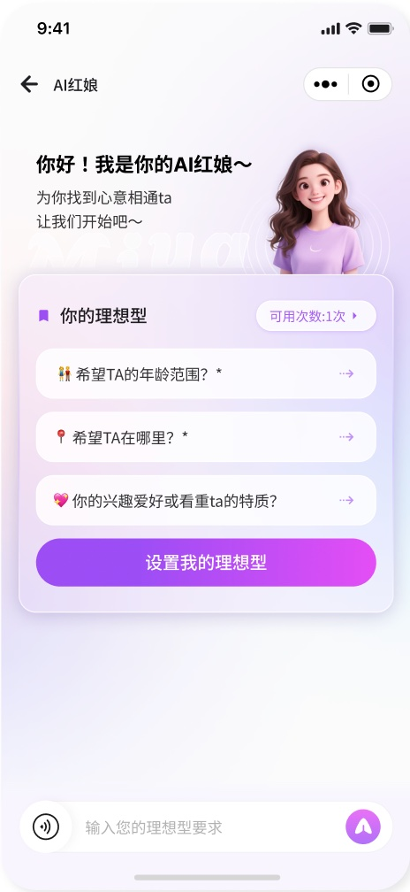
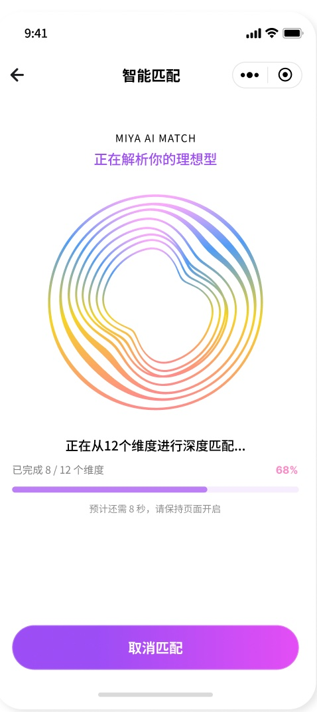
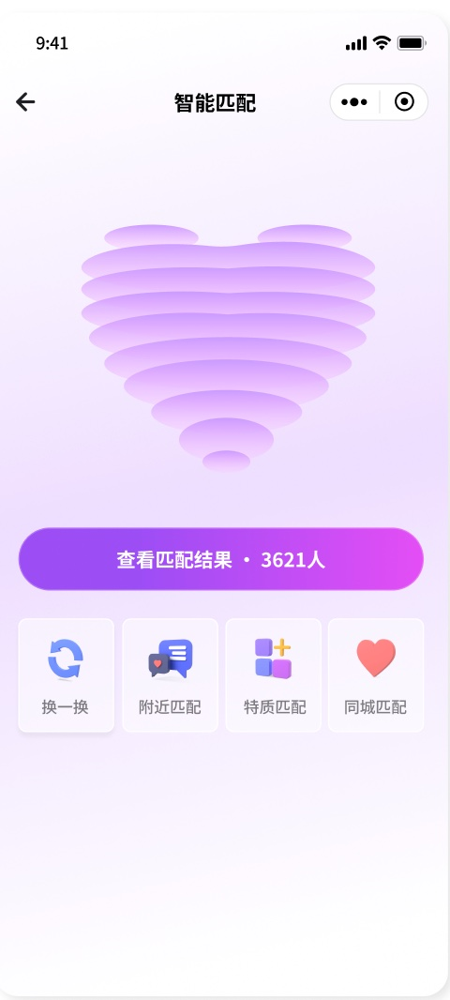
关键问题
Miya·全栈设计
Match Trust
匹配结果缺乏信任，价值感不足。
Setup Drop-off
配置步骤繁琐，门槛高极易劝退。
Ice-breaking
缺乏同频信号，破冰困难，启动率低。
Monetization
付费路径分散，商业化闭环不清晰。
+35% 匹配后互动率提升 | -60% 初始配置耗时 | +25% 付费链路转化率提升
解决方案
AI匹配降门槛
Smart Matching & Low Friction
核心体验
降低配置门槛： 分栏布局结合默认值，卡片点选替代繁琐输入。
AI 精准解析： 通过多维度深度解析，建立匹配结果的信任感。
AI 辅助破冰： 匹配后 AI 自动生成开场白，提升对话启动率。
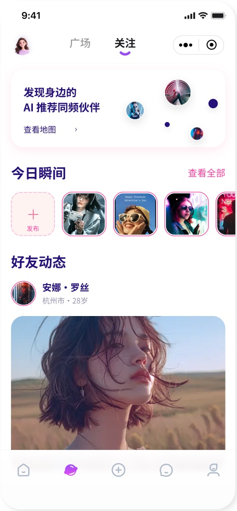
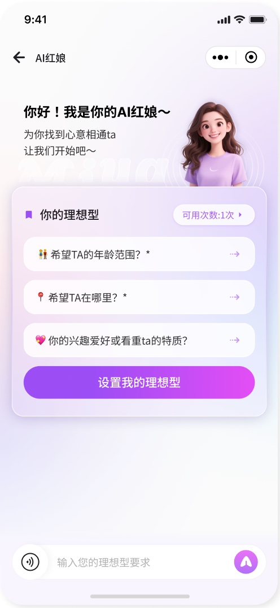
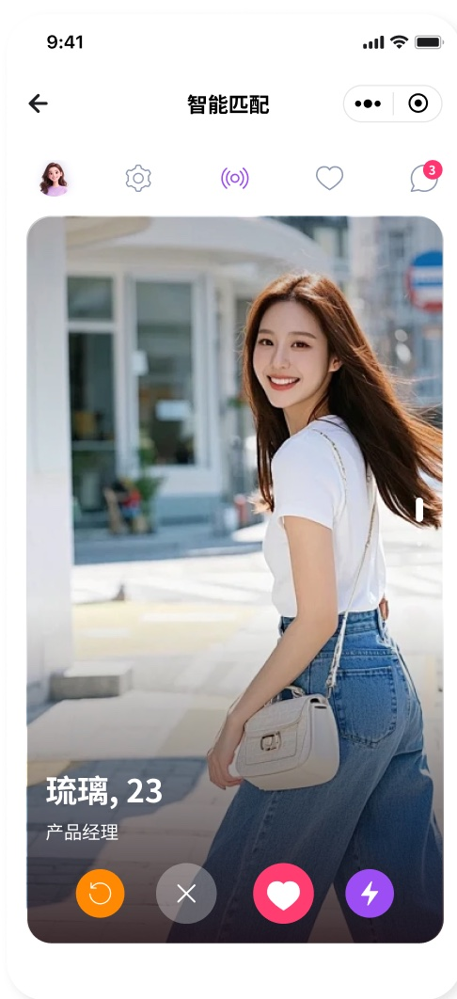
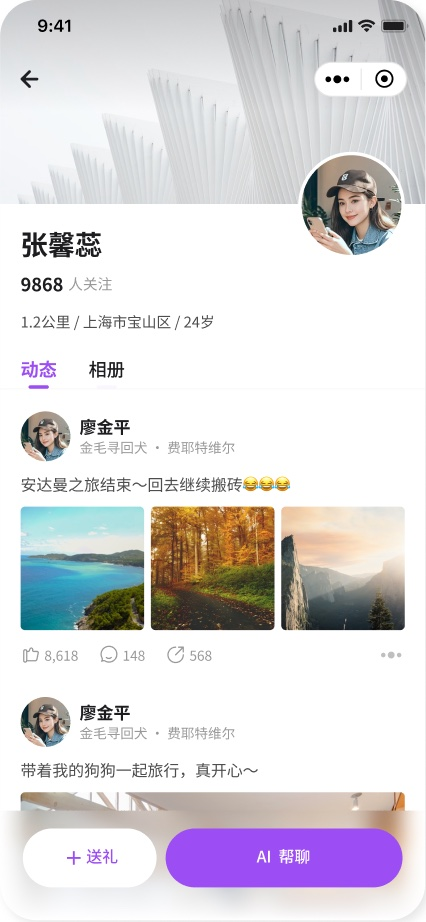
品牌与系统
Design System & UI Components
视觉语言
与设计系统
情感化视觉： 采用淡紫浪漫色调结合 3D 虚拟形象，建立温暖、信任的社交心智。
多态组件库： 沉淀覆盖匹配、聊天、个人中心的 Tab、卡片等标准组件。
数据授权透明： 在 AI 设置页前置数据授权开关，保障用户隐私安全。
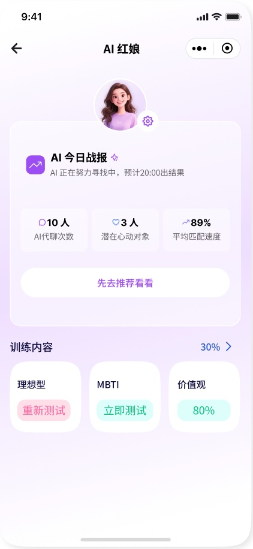
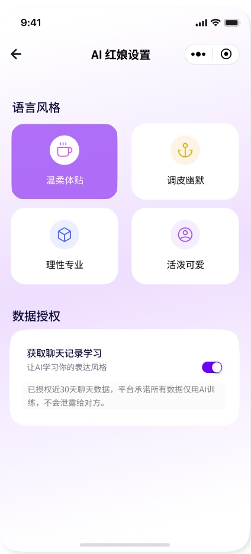
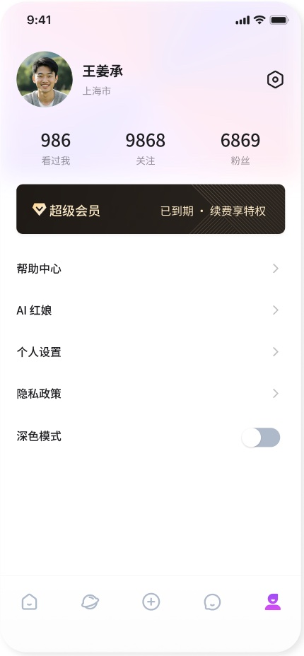
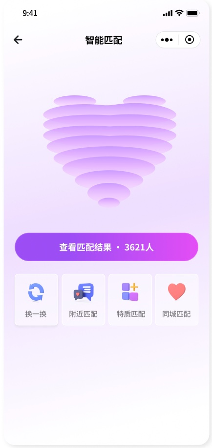
界面交付
界面交付
核心全链路
High-Fidelity UI & Full-Chain Delivery
覆盖新用户建档、AI智能匹配、沉浸式破冰聊天。
无缝接入金币与礼物体系，实现从体验到付费的闭环。
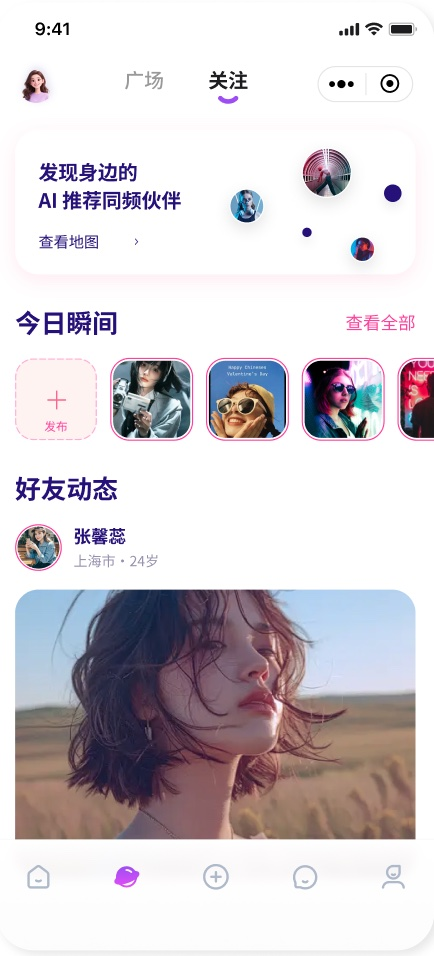
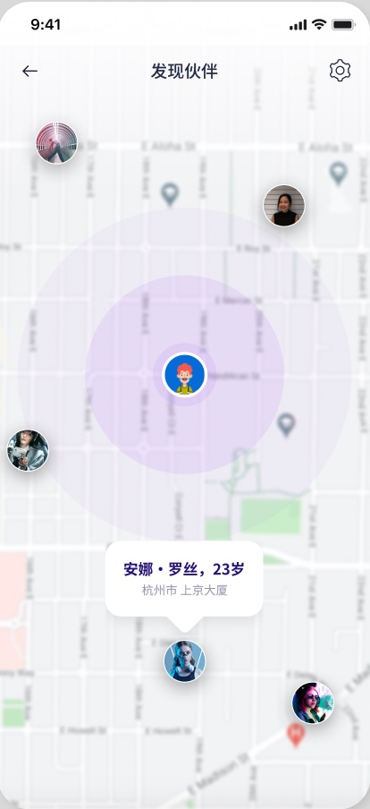
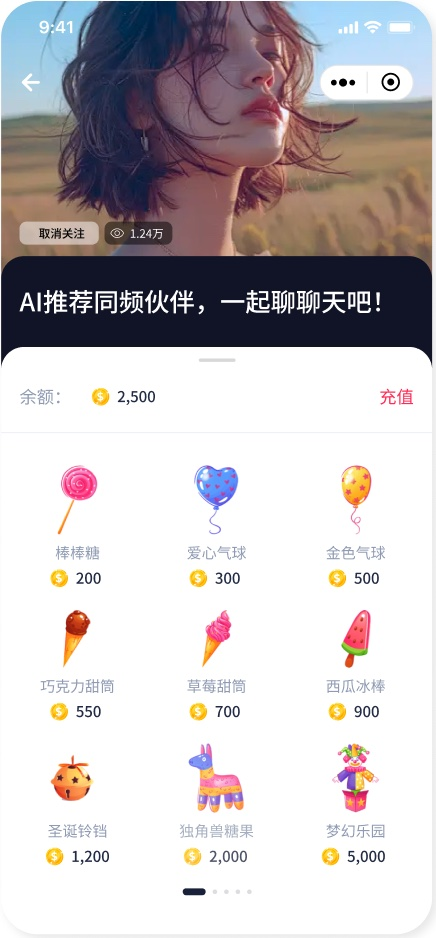
项目复盘
Retrospective & Value Creation
项目复盘
与价值沉淀
降本增效（AI+组件化） ：建立标准化组件库，配合 AIGC 辅助生成，大幅缩短多页面迭代周期。
体验保障（AI驱动） ：将繁琐的资料填写转化为 AI 对话，用户初始配置成本大幅降低，匹配信任度提升。
商业闭环（自然转化） ：设计金币与送礼体系，自然串联付费路径，核心互动与付费转化率显著提升。
“用 AI 降低社交的启动门槛，用体验设计建立信任，让每一次精准匹配都能转化为有温度的连接。”
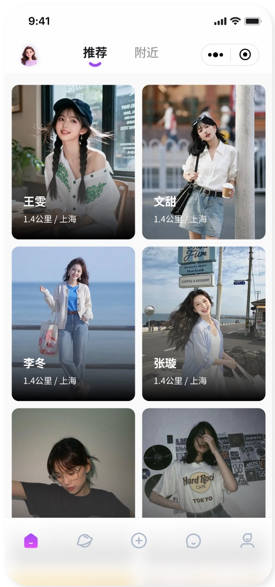
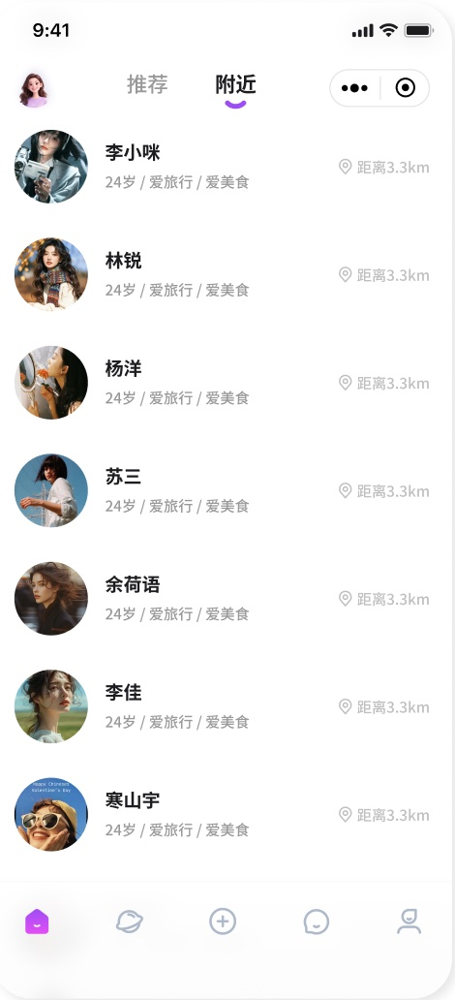
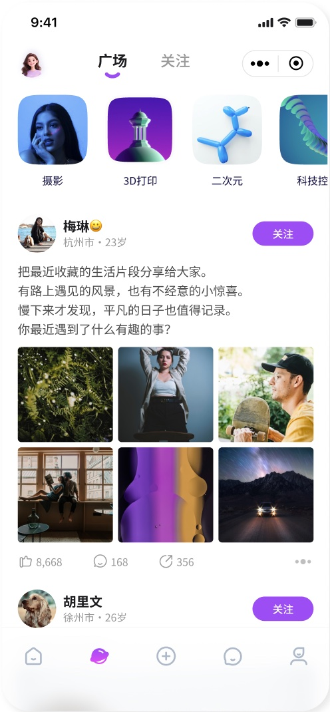
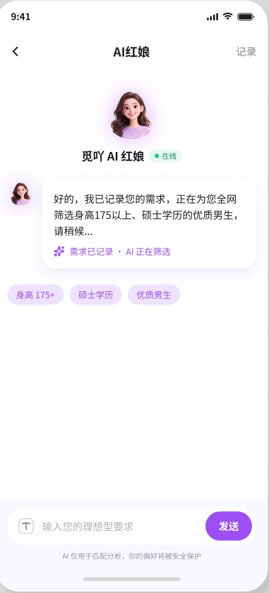